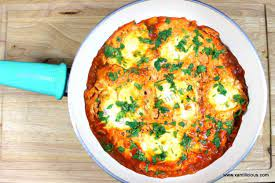

The word shakshuka is usually associated with the tomato and egg dish (ojja), but in Tunisia, shakshuka is actually this delicious and simple tomato-pepper-potato stew. It's often a go-to quick fix when you don't have a ton of ingredients on hand and need something fast and filling. Any beginner cook can make it; in fact, it was the first dish Rim learned how to cook. And the only time you'd find Munya's dad in the kitchen cooking was when he was making shakshuka. Point of the story? Anyone can make it!
Add enough oil to cover the bottom of a saute pan or shallow pot. Heat to medium. Add tomatoes and saute. Add onions, peppers, and potatoes. Add salt, black pepper, and paprika. Stir gently and let steam. Lower the heat and let cook, may need to half .5 cup of water if it looks a bit dry. Add 1 tablespoon of tomato paste if you don't have enough fresh tomatoes or the color doesn't look red enough. Cook until the potatoes are tender, but the other vegetables still retain their form/don't break down too much. If adding eggs, crack whole eggs on top or poach some on the side. Once eggs are cooked to your desired doneness, garnish with parsley and serve with bread. Enjoy
